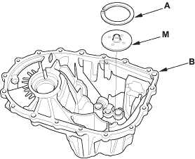
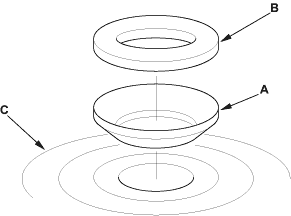
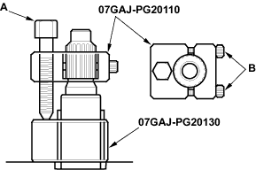

- Install the 72 mm shim (A) selected and oil guide plate M in the transmission housing (B).

- Throughly clean the spring washer (A) and washer (B) before installing them on the ball bearing (C). Note the installation direction of the spring washer.

- Install the mainshaft in the clutch housing.
- Place the transmission housing over the mainshaft and onto the clutch housing.
- Tighten the clutch and transmission housings with several 8 mm bolts.
NOTE: It is not necessary to use sealing agent between the housings.
- Lightly tap on the mainshaft with a plastic hammer.

- Attach the special tool to the mainshaft as follows:
- Back-out the mainshaft holder bolt (A) and loosen the two hex bolts (B).
- Fit the holder over the mainshaft so its lip is towards the transmission.
- Align the mainshaft holder's lip around the groove at the inside of the mainshaft splines, then tighten the hex bolts.

- Seat the mainshaft fully by tapping on its end with a plastic hammer.
- Thread the mainshaft holder bolt in until it just contacts the wide surface of the mainshaft base.